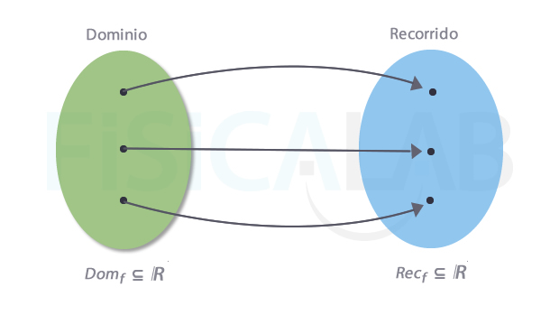
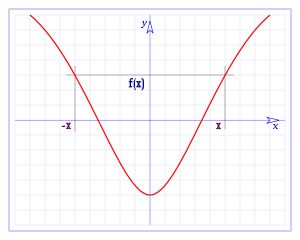

Graficadora de Funciones Trigonometricas

Las funciones trigonométricas se definen comúnmente como el cociente entre dos lados de un triángulo rectángulo, asociado a sus ángulos.
Las funciones trigonométricas son funciones cuyos valores son extensiones del concepto de razón trigonométrica en un triángulo rectángulo trazado en una circunferencia unitaria (de radio unidad).
Definiciones más modernas las describen como series infinitas o como la solución de ciertas ecuaciones diferenciales, permitiendo su extensión a valores positivos y negativos, e incluso a números complejos.
Existen seis funciones trigonométricas básicas. Las últimas cuatro, se definen en relación de las dos primeras funciones, aunque se pueden definir geométricamente o por medio de sus relaciones. Algunas funciones
fueron comunes antiguamente, y aparecen en las primeras tablas, pero no se utilizan actualmente ; por ejemplo el verseno (1 − cos θ) y la exsecante (sec θ − 1).
El dominio (conjunto de definición o conjunto de partida) de una función F:X->Y es el conjunto de existencia de ella misma, es decir, los valores para los cuales la función está definida. Es el conjunto
de todos los objetos que puede transformar, se denota: Dom (F). En Rn se denomina dominio a un conjunto conexo, abierto y cuyo interior no sea vacío.
Por otra parte, el conjunto de todos los resultados posibles de una función dada se denomina codominio de esa función.
Se llama imagen o recorrido de una función, y se designa Im (F), a todos los valores de la variable dependiente que tienen algún valor de la variable independiente que se transforma en él por la función.
Estudiar los signos de una función consiste en ver en qué intervalos su gráfica está por encima del eje X y por debajo. Por lo tanto, estos signos hacen referencia a los signos que toma la Y según lo que valga la X.
En matemáticas, se puede clasificar a las funciones según su paridad: Las funciones pueden ser pares, impares o no tener paridad. Aquellas funciones que poseen paridad satisfacen una serie de relaciones
particulares de simetría, con respecto a sus funciones inversas aditivas (funciones inversas aditivas u opuestas son funciones que al sumarlas el resultado es cero).
Función par: f (-x) = f (x)
Función impar: f (-x) = - f (x)
Las funciones pares e impares deben su nombre a la paridad de las potencias en las funciones de potencias que satisfacen cada condición:La función f(x)=xn : es una función par si n es un entero par, y es una función impar si n es un entero impar.
